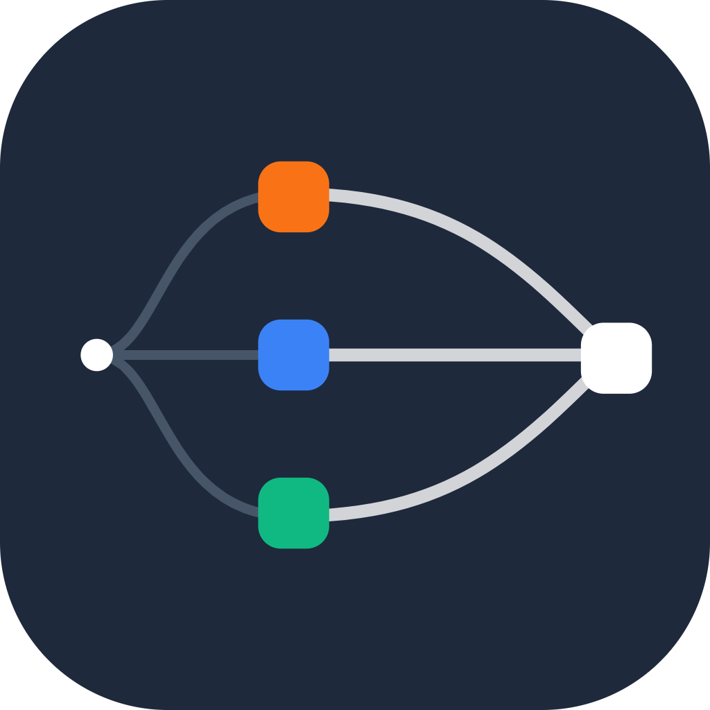

Provider sessions
Launch and organize multiple AI providers in one desktop workspace.

AIDesk DownloadLocal-first AI workspace for Windows and Linux
One focused desk for ChatGPT, Claude, Gemini, DeepSeek, Perplexity, local models, saved chats, citations, artifacts, files, and the prompts worth keeping.
Market research summary
Product launch prompt
Verified output proof
What it does
AIDesk keeps the daily workflow fast: open providers side by side, send prompts, collect useful answers, and turn scattered conversations into a local knowledge base.
Launch and organize multiple AI providers in one desktop workspace.
Send one prompt to selected providers and compare the useful parts faster.
Save important messages, search them later, and export when you need to move.
Pull out links, generated files, code blocks, reports, and reusable outputs.
Bring files, source context, media trimming, OCR, and terminal workflows closer to chat.
Use AIDesk without giving up the habit-forming local workflow that makes it valuable.
Cloud Sync
The clean monetization line is cloud infrastructure: account storage, multi-device state, encrypted backups, and a web viewer for checking your unified chats from a phone.
Saved product strategy answer
Landing page copy draft
Research with citations
Prompt Marketplace
Sellers publish proof, not the full secret. Buyers see the output, partial prompt signals, votes, and an AIDesk verification that the hidden prompt produced the shown result inside AIDesk.
Concise memo with assumptions, citations, and a decision summary.
Hash the hidden prompt, store the output proof, and show that the pair was created in AIDesk.
Start with verified share cards, then add buying, payouts, reporting, and seller profiles.
Verified prompts create public proof and distribution before the full commerce layer exists.
Pricing shape
Pricing can change later, but the product boundary should be clear from day one.
Free beta
For trying AIDesk locally and building the habit.
Paid
For users who want AIDesk as their durable AI memory layer.
Download
AIDesk is distributed through GitHub Releases while the product is still moving fast. Download the latest installer or portable build from the release page.
FAQ
No. AIDesk is designed around the AI services, accounts, and local models you already use.
The free beta can keep the app usable while asking heavy users to upgrade for larger saved history and sync.
No. The desktop app is local-first. Sync is the paid convenience layer for users who want continuity across devices.
It means AIDesk can confirm that a hidden prompt and visible output were generated as a matched pair inside AIDesk.